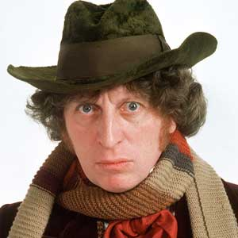

Portrayed by Tom Baker
|  |
The Fourth Doctor is the fourth incarnation of the protagonist of the long-running BBC television science fiction series Doctor Who. He was portrayed by Tom Baker for seven consecutive seasons from December 28, 1974 (Part One of Robot) to March 21, 1981 (Part 4 of Logopolis), and remains the longest-lived incarnation of the Doctor in the show's on-screen history, counting both the classic and modern series. Within the series' narrative, the Doctor is a centuries-old Time Lord alien from the planet Gallifrey who travels in time and space in his TARDIS, frequently with companions. When the Doctor is critically injured, he can regenerate his body, changing his physical appearance and personality in the process. |